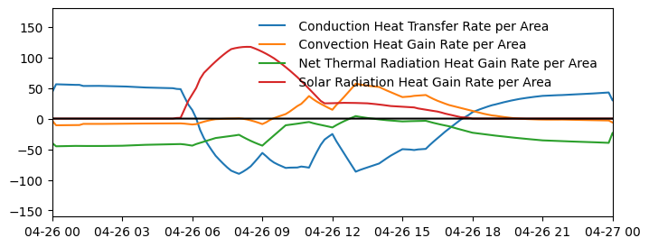
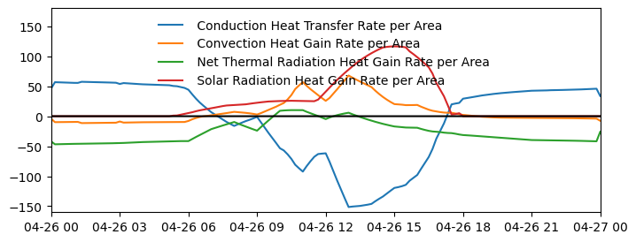
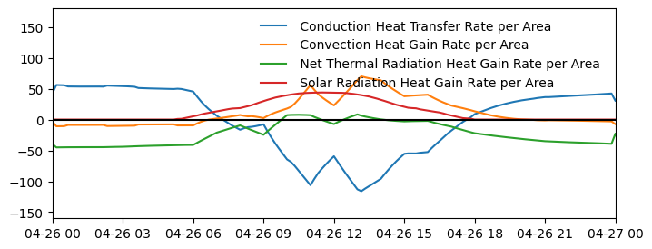
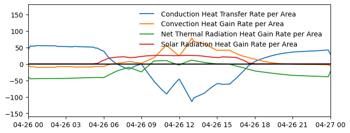
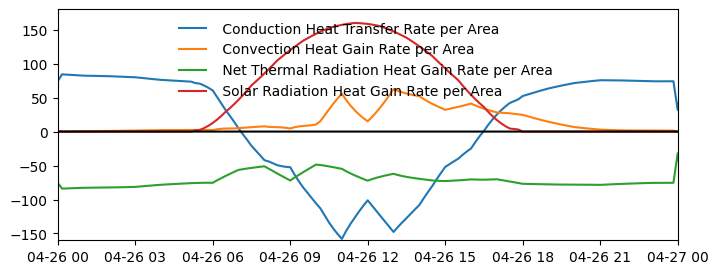
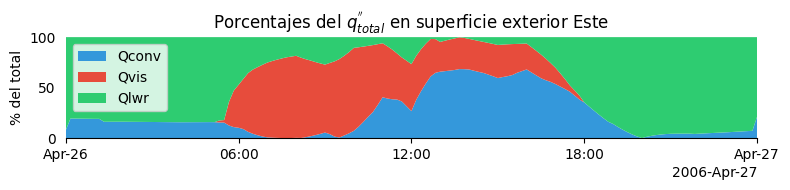
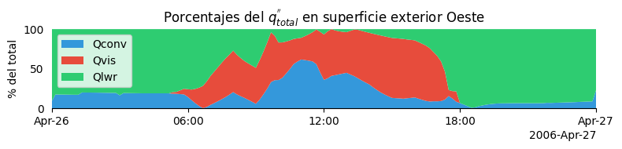
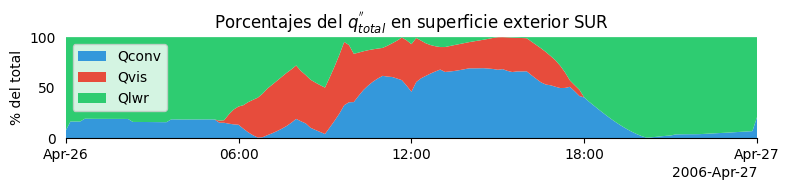
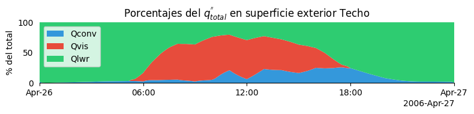

Código
#Paquetes usados para el trabajo
import matplotlib.pyplot as plt
import matplotlib.dates as mdates
import pandas as pd
from iertools.read import read_sql,read_epw
from dateutil.parser import parseEn este documento se presenta el balance de calor en un muro externo de una edificación y un acercamiento a como presentarlo usando Python y Pandas. En la Ecuación 1 se muestra el balance de calor y sus componentes para una superficie.
Balance de calor
\[q^"_{\alpha sol} + q^"_{LWR}+ q^"_{conv}=q^"_{k}, \tag{1}\]
donde: \(q^"_{\alpha sol}\) = Absorbed incident solar (short wavelength or visible) radiation heat flux
\(q^"_{lwr}\) = Net long wavelength (thermal) radiation flux exchange with the surroundings
\(q^"_{conv}\) = Convective flux exchange
\(q^"_{k}\) = Conduction heat flux ) into the wall at \(x\)
Se carga el EPW para localizar el día con mayor insolación. Se utiliza iertools.read para leer el archivo SQL y no se renombran las columnas, pues se utilizará una técnica de Python para seleccionarlas de manera más fácil.
#Paquetes usados para el trabajo
import matplotlib.pyplot as plt
import matplotlib.dates as mdates
import pandas as pd
from iertools.read import read_sql,read_epw
from dateutil.parser import parsef = "../epw/MEX_MOR_Cuernavaca-Matamoros.Intl.AP.767260_TMYx.epw"
epw = read_epw(f,alias=True,year=2006)
epw.Ig.resample("D").sum().idxmax()Timestamp('2006-04-26 00:00:00')fecha = '2006-04-26'f = ("../idf/001_cubito.sql")
idf = read_sql(f,read="all")
df = idf.dataSe obtienen las columnas del conjunto de datos, sin modificación alguna, se muestran las primeras dos como referencia.
columnas = df.columns
columnas[:2]Index(['MURO_ESTE:Surface Outside Face Conduction Heat Transfer Rate per Area (W/m2)', 'MURO_ESTE:Surface Outside Face Convection Heat Gain Rate per Area (W/m2)'], dtype='object', name='variable_name')La variable columnas contiene todos los nombres de las variables en superficie exterior para los muros, conteniendo la palabra ’_ESTE’, ’_OESTE’, ’_NORTE’, ’_SUR’ y ‘TECHO’.
Se escribe una funcion que acepta un DataFrame, la orientación, como se especificó en el párrafo anterior y la fecha del día que se desea analizar el balance de flujo de calor en ‘str’. Esta función selecciona las variables que contienen la subcadena de la orientación, también calcula el balance de las variables seleccionadas y grafica todo lo anterior.
Esta función no detecta si es superficie interna o externa, por lo que en los resultados de esta simulación solo se incluyen las variables del exterior.
def grafica_balance(df,orientacion,f1):
columnas = df.columns
orientacion_cols = [columna for columna in columnas if orientacion in columna]
f2 = f1 + pd.Timedelta("1D")
fig, ax = plt.subplots()
balance = df[orientacion_cols].sum(axis=1)
etiquetas = [col.split(":")[1][20:-6] for col in orientacion_cols]
for col,etiqueta in zip(orientacion_cols,etiquetas):
ax.plot(df[col],label=etiqueta)
ax.plot(balance,"k-",label="")
# ax.set_title(orientacion[1:])
ax.legend(loc='best')
ax.set_xlim(f1, f2)
ax.set_ylim(-160,180)
ax.legend(frameon=False)
fig.set_size_inches(8,3)
De tal manera que podemos obtener toda las gráficas simplemente especificando la fecha y pasando el DataFrame que contiene todas las variables de interés para cada orientación.
El resultado se muestra en la Figura 1 para los muros Este, Oeste, Norte, Sur y Techo, respectivamente. Se puede identificar la orientación Este de la Figura 1 (a) y como para el caso del Techo, la radiación absorbida se asemeja a la radiación global en forma pero con un valor máximo cercano a 150 \(W/m^2\) (Figura 1 (e)).
f1 = parse("2006-04-26")
grafica_balance(df,"_ESTE",f1)
grafica_balance(df,"_OESTE",f1)
grafica_balance(df,"_NORTE",f1)
grafica_balance(df,"_SUR",f1)
grafica_balance(df,"TECHO",f1)




De manera similar, se escribió una función para calcular el porcentaje que cada componente del balance aporta al flujo total. La función acepta el DataFrame, la fecha del día a graficar y se especifican los nombres de las columnas que contienen el flujo de calor absorbido por radiación visible, por convección y por radiación de onda larga, además del título de la gráfica donde se recomienda especificar la orientación a la que corresponden los datos.
def grafica_porcentaje(df, f1, Qvis, Qconv, Qlwr, titulo):
# Calculando porcentajes
total = df[Qconv].abs() + df[Qvis].abs() + df[Qlwr].abs()
pct_Qconv = df[Qconv].abs() / total * 100
pct_Qvis = df[Qvis].abs() / total * 100
pct_Qlwr = df[Qlwr].abs() / total * 100
f2 = f1 + pd.Timedelta("1D")
# Preparando gráfica
fig, ax = plt.subplots(figsize=(8, 2))
# Usar ConciseDateFormatter
locator = mdates.AutoDateLocator(minticks=4, maxticks=6)
formatter = mdates.ConciseDateFormatter(locator)
ax.xaxis.set_major_locator(locator)
ax.xaxis.set_major_formatter(formatter)
ax.stackplot(df.index, pct_Qconv, pct_Qvis, pct_Qlwr, labels=("Qconv", "Qvis", "Qlwr"), colors=['#3498db', '#e74c3c', '#2ecc71'])
ax.set_ylim(0, 100)
ax.set_xlim(f1,f2)
ax.set_ylabel("% del total")
ax.set_title(titulo)
ax.legend(loc='upper left')
# Eliminando bordes y ticks para simplificar
ax.spines['top'].set_visible(False)
ax.spines['right'].set_visible(False)
ax.spines['left'].set_visible(False)
ax.yaxis.set_ticks_position('none')
plt.tight_layout()Para identificar las variables correspondientes a cada orientación se utiliza el siguiente list-comprehension:
cols_orientacion = [col for col in columnas if "_ESTE" in col]
cols_orientacion['MURO_ESTE:Surface Outside Face Conduction Heat Transfer Rate per Area (W/m2)',
'MURO_ESTE:Surface Outside Face Convection Heat Gain Rate per Area (W/m2)',
'MURO_ESTE:Surface Outside Face Net Thermal Radiation Heat Gain Rate per Area (W/m2)',
'MURO_ESTE:Surface Outside Face Solar Radiation Heat Gain Rate per Area (W/m2)']Para cada muro, se obtiene la gráfica con el siguiente código, por ejemplo para el muro Este se hace:
cols_orientacion = [col for col in columnas if "_ESTE" in col]
f1 = parse("2006-04-26")
titulo = "Porcentajes del $q_{total}^{\'\'}$ en superficie exterior Este"
Qvis = cols_orientacion[3]
Qconv = cols_orientacion[1]
Qlwr = cols_orientacion[2]
grafica_porcentaje(df,f1,Qvis,Qconv,Qlwr,titulo)
En las Figura 2 (a) a Figura 2 (e) se presentan los porcentajes del flujo neto a cada instante durante el día más soleado de Temixco. El flujo neto está formado por el flujo de calor convectivo (Qconv), flujo de calor por radiación visible (Qvis) y el flujo de calor por radiación de onda larga.



Python, Jupyter Notebook y Quarto están super chidos!.